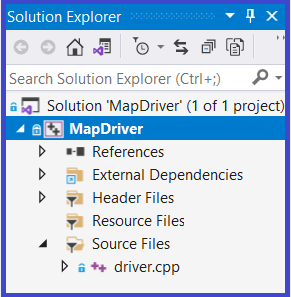
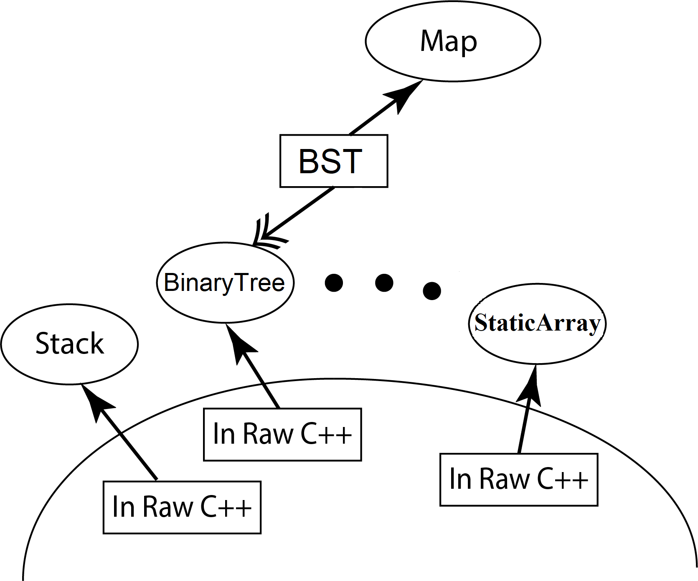
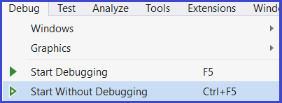
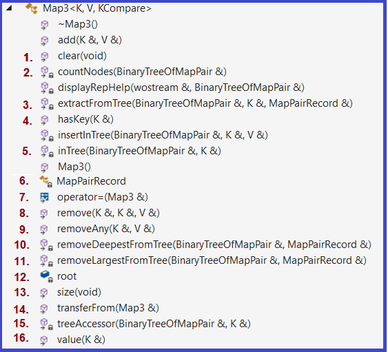
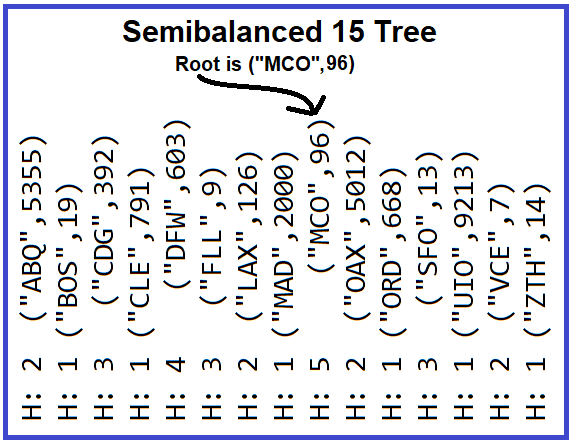

1.3 Create ProjP2
|
 |
2.1 Primary ObjectivesThe primary objective of this assignment is to provide you experience with:
2.2 SpecificsPart1 - Initial Configuration of Map3.hpp The member functions in Map3 have been stubbed out which means that each member function body has no code, just the header and a set of open and closed curly braces for a body Map3.hpp will not build correctly until you have made a few initial edits |
 |
Part 2 - Layering a Component
Open VS2019 and begin working on Map3.hpp by first finding comments that begin with Step X (where X is a number from 1 to 5). Start with Step 0 and work your way through to Step 5, carefully following the instructions of each Step.
Step 6 recommends an ordering for implementing and testing the operations of Map3
Run the driver by choosing from Debug from the Menu Bar, and then choosing either Start Debugging or Start Without Debugging

All Map3 specific operations must call a private recursive helper operation. These operations have been stubbed and specified in Map3.hpp. The table below indicates that the Standard Operations will use call throughs to BinaryTree component operations, while the Map3 Specific Operations call a corresponding recursive helper operation.
| Exported Map Operation | Private Map Operation | |
|---|---|---|
| the constructor | doesn't call | BinaryTree's constructor automatically called |
| the destructor | doesn't call | BinaryTree's destructor automatically called |
transferFrom |
calls | call through to BinaryTree |
operator = |
calls | call through to BinaryTree |
clear |
calls | call through to BinaryTree |
add |
calls | insertInTree (see supplied code in Map3.hpp) |
size |
calls | countNodes |
hasKey |
calls | inTree |
removeAny |
calls | removeDeepestFromTree |
remove |
calls | extractFromTree |
value |
calls | treeAccessor |
Important Restrictions:
AirportDataSize7 Folder
|
 |
| airport7AbstractMapView When you Build in Release configuration, this will be displayed |
airport7AbstractBinaryTreeView | airport7BalancedTextbookTreeView When you Build in Debug configuration, this will be displayed |
m1 = {
("VLV",2060),("DFW",603),
("MAD",2000),("DOG",773),
("ORD",668),("CLE",791),
("YET",3041)
}
Set of 2-tuples, sets are not ordered |
m1 =
(("MAD",2000),
(("DFW",603),
(("CLE",791),E,E),
(("DOG",773),E,E)),
(("VLV",2060),
(("ORD",668),E,E),
(("YET",3041),E,E)))
("MAD",2000) is the root's label |
m1 =
H: 1 ("CLE",791)
H: 2 ("DFW",603)
H: 1 ("DOG",773)
H: 3 ("MAD",2000)
H: 1 ("ORD",668)
H: 2 ("VLV",2060)
H: 1 ("YET",3041)
H = Height of node |
The Grader's test cases:
Grading will be done running a more complete set of test scripts which will systematically stress your member function implementations
Recommended Testing:
